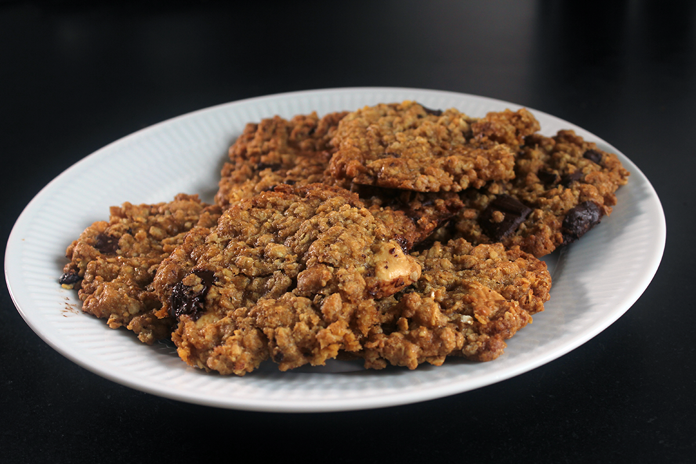
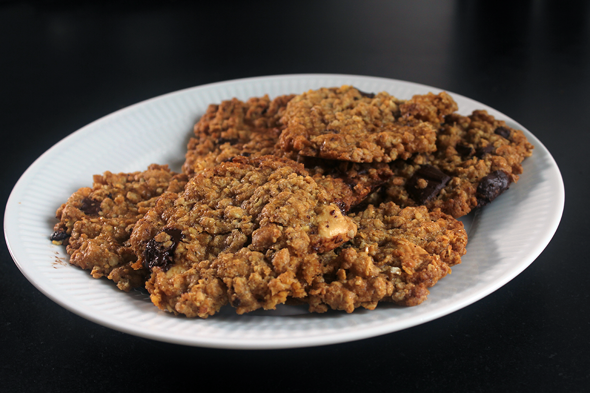

←

150g smør
4½ dl farin
¾ dl sukker
1 tsk. vaniljesukker
2 æg
6½ dl havregryn
3 dl hvedemel
1 nip salt
1 tsk. bagepulver
200g mørk chokolade (eller 100g mørk og 100g hvid)
Cookies med chokoladestykker
ca. 30 stk.

Ingredienser
Sådan gør du
1. Smelt smørret og rør det med farin, sukker og vanilje til det bliver cremet.
2. Pisk æggene let og bland dem i sammen med havregrynene. Bland mel med salt og bagepulver og ælt det i dejen lidt ad gangen.
3. Hak chokoladen i grove terninger på størrelse med hasselnøddekernerne og ælt dem godt rundt i dejen.
4. Form kugler i hænderne og tryk dem flade på en bageplade med bagepapir.
5. Bages ved 180 C i 8-12 minutter afhængig af størrelsen.
6. Træk papiret over på en rist og lad kagerne køle af der.